ScopeVis is an ML-powered toolkit that identifies regions of interest and recommends optimal viewing parameters in complex multichannel microscopy volumes.
Modern nanoscale imaging at national laboratory facilities generates four-dimensional datasets: three spatial dimensions plus chemical element channels. Determining correct visualization parameters for each dataset requires enormous manual effort. ScopeVis automates this process end-to-end.
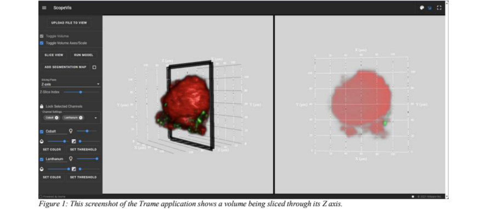
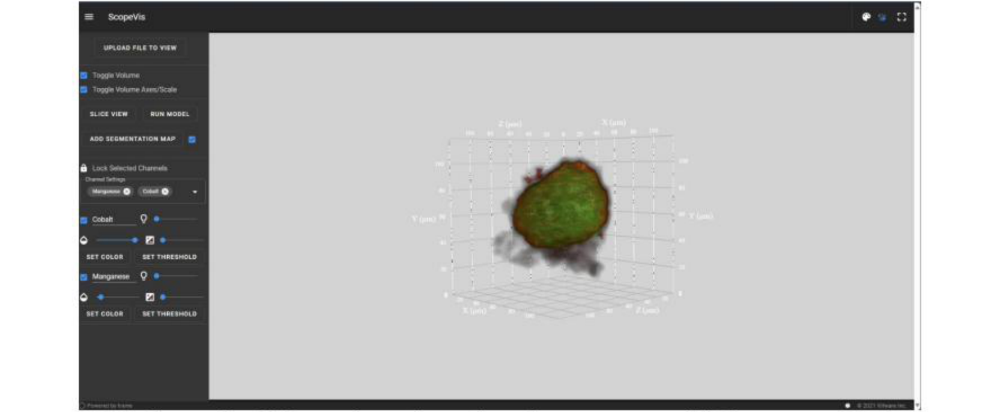
The ScopeVis pipeline automatically processes multichannel microscopy volumes through thresholding, segmentation, ROI selection, and parameter optimization. Results surface directly in the web application as recommended starting parameters.
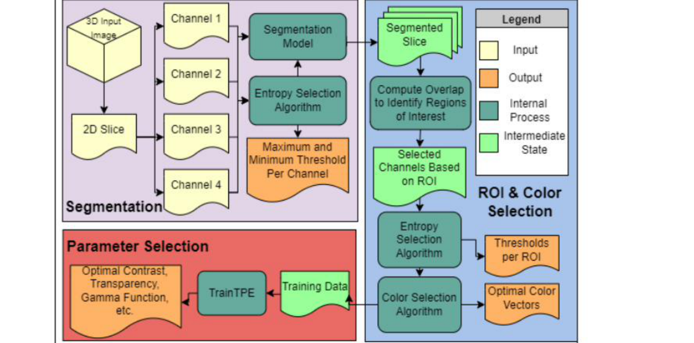
Raw microscopy intensity values span wide ranges (0–12,000+) that are incompatible with the 0–255 RGB range required by segmentation models. Linear rescaling produces images too dark to analyze. ScopeVis uses a two-step method to find the optimal lower and upper bounds before rescaling.
A Kernel Density Estimate is fit to the intensity histogram. The first local maximum of the KDE curve identifies the background peak, becoming the lower bound. This handles noisy backgrounds that don’t start at zero.
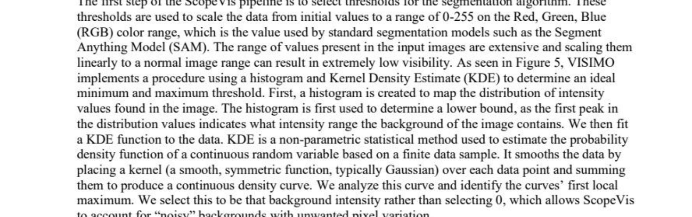
This Z-axis slice at index 22, Channel 0 is the example used throughout the thresholding section. Raw intensity range: 0–12,000+.
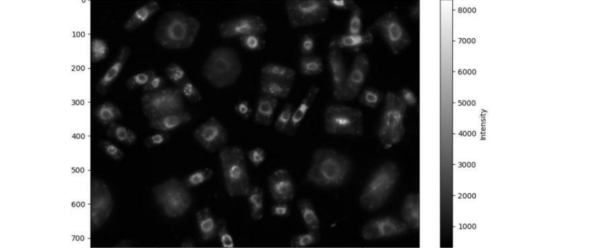
Three metrics were evaluated: KL-Divergence, Gini Index, and Entropy. Entropy produced the best visualizations. ScopeVis iterates over 100 candidate upper bounds and selects the value maximizing a joint objective of entropy (even use of 0–255 range) and data inclusion (minimizing clipped pixels).
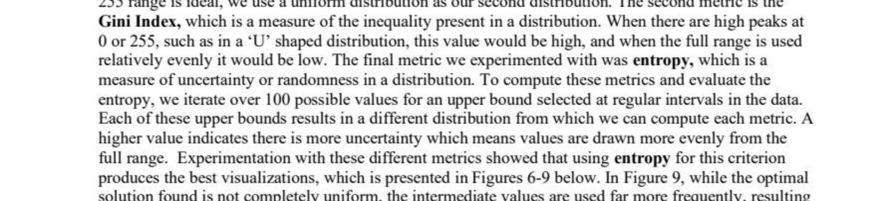
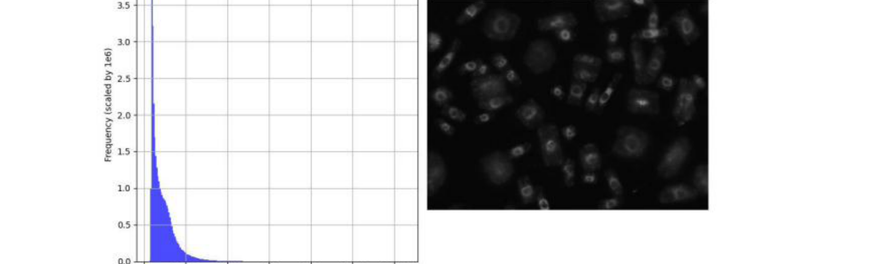
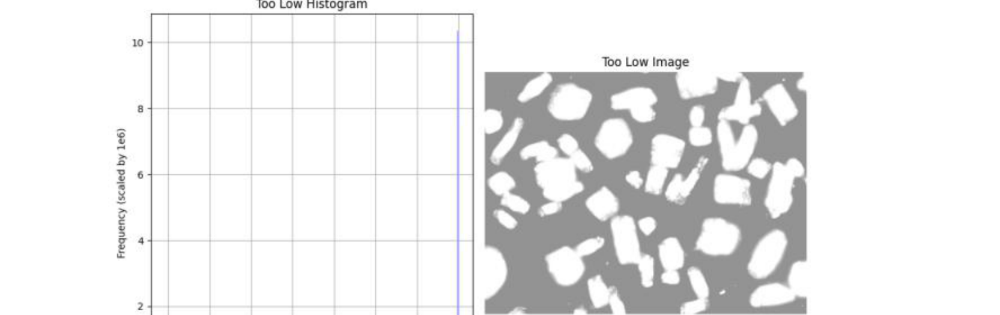
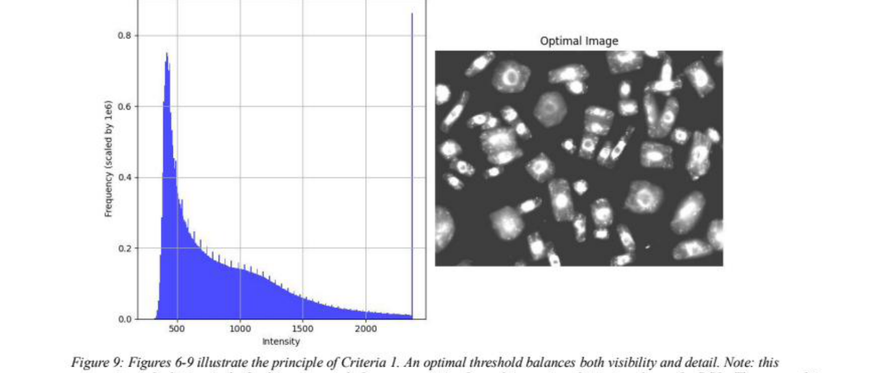
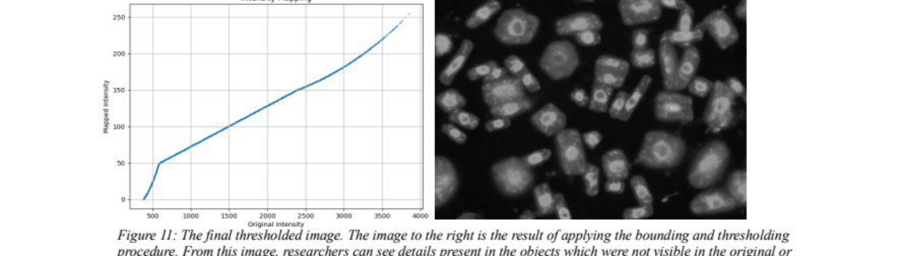
Accurate segmentation is essential: ROIs rely entirely on objects identified here. ScopeVis implements five segmentation methods, chosen based on data type and resolution.
| Method | Best For | Notes |
|---|---|---|
| SAM Segment Anything Model | High-resolution volumes (e.g., 35×728×968) | Vision Transformer backbone. 2D segments stitched into 3D volumes via graph spectral clustering. |
| MicroSAM | Microscopy-specific datasets | SAM fine-tuned on electron microscopy data. Less effective on optical fluorescence; reserved for Phase II. |
| 3D Watershed | Lower-resolution volumes (e.g., 120×120×120) | Treats intensity as topography and floods from local minima. Sensitive to noise. |
| 3D Region Growing | Connected, similar-intensity regions | Iteratively expands from local-maxima seed points using an intensity similarity threshold. |
| Custom 3D Watershed Sobel-Enhanced | Subtle intensity boundaries | Augments watershed with 3D Sobel edge detection (3×3 kernels in X, Y, Z). Distance computed to edges rather than background. |
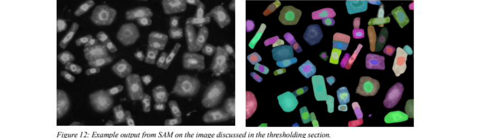
SAM operates on 2D slices. Naive IoU threshold joining fails for diagonal or stacked objects. ScopeVis uses graph spectral clustering: each 2D segment becomes a node, overlapping segments form weighted edges (centroid distance + IoU), and spectral clustering produces coherent 3D volumes.
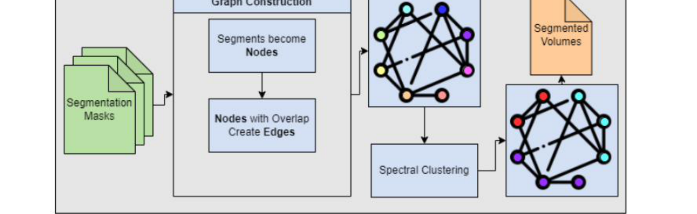
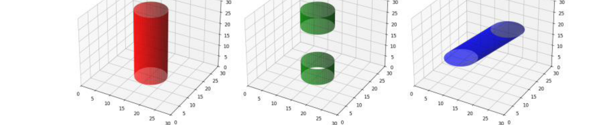
For lower-resolution data, standard watershed produces a single mask for the entire region. ScopeVis supplements watershed with 3D Sobel edge detection: gradient magnitudes are computed as ‖∇G‖ = √(Gx² + Gy² + Gz²). Watershed then computes distance-to-edge rather than distance-to-background, enabling detection of sub-structures separated by gradual intensity transitions.
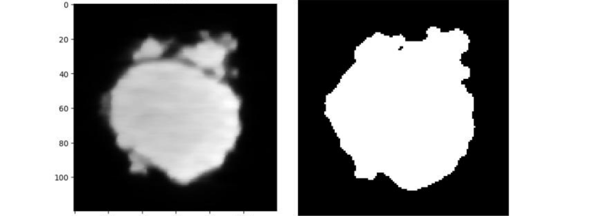
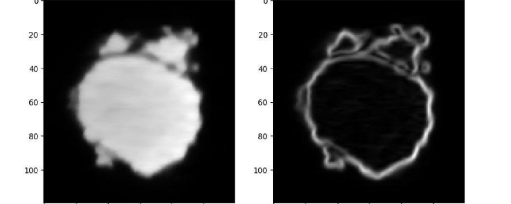
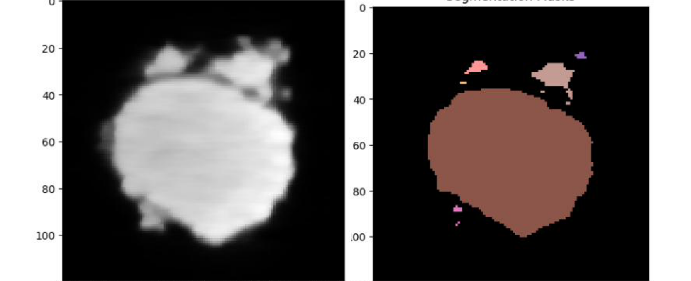
After segmentation, cross-channel segments corresponding to the same physical object are grouped into unified ROIs. A second graph clustering algorithm identifies which segments from different chemical channels co-localize spatially, then recommends the optimal channel subset for viewing each ROI.
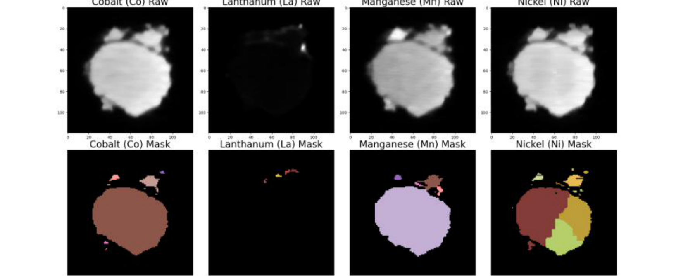
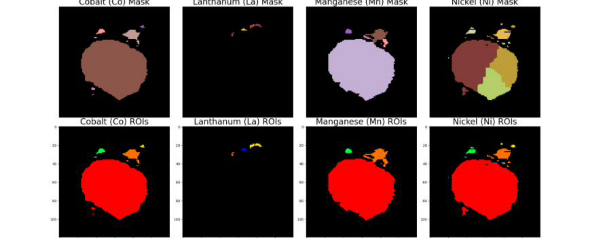
Two groups of parameters are selected per ROI: color assignments (which RGB vectors map to each channel) and non-color parameters (contrast, brightness, transparency, gamma, etc.).
Each channel is treated as a vector in 3D color space. ScopeVis assigns colors so that selected channel vectors are as orthogonal as possible, maximizing visual separability between co-visualized channels.
A Tree-structured Parzen Estimator maintains two KDEs — for high-reward g(x) and low-reward l(x) configurations — and selects new candidates by maximizing g(x)/l(x). More efficient than grid or random search.
The ROI must be visually distinguishable from its surroundings. Measured as contrast between the ROI region and the surrounding rendered image.
The visualization must not obscure original data features. Measured using mutual information between the rendered output and each input channel. Configurations that erase detail are penalized.
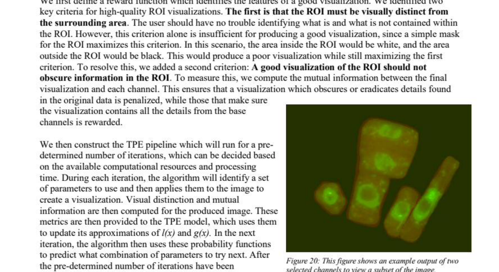
The TPE pipeline runs for a configurable number of iterations. During each iteration, a candidate parameter set is applied to the image; visual distinction and mutual information are computed and fed back to TPE to update its probability models.
This optimization cannot be performed via gradient descent — the relationship between visualization parameters and perceptual quality has no differentiable form — making the Bayesian approach particularly well suited.
| Technical Objective | Status |
|---|---|
| Finalize R&D Plan — specifications, stakeholder interviews, benchmarks | 100% |
| Data Collection & I/O — BNL training dataset, file ingestion, raw visualization | 100% |
| Build Trame-based Application — frontend, per-channel controls, slice view | 100% |
| Implement ML Pipeline — segmentation, ROI selection, optimal display parameters | 100% |
| Verify & Validate ML Architecture — SME evaluation at BNL, iterative testing | 100% |